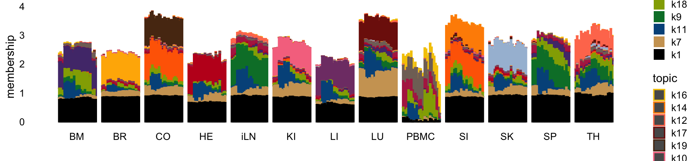

Last updated: 2025-07-17
Checks: 5 2
Knit directory: ebnmf-paper/
This reproducible R Markdown analysis was created with workflowr (version 1.7.1). The Checks tab describes the reproducibility checks that were applied when the results were created. The Past versions tab lists the development history.
The R Markdown is untracked by Git. To know which version of the R
Markdown file created these results, you’ll want to first commit it to
the Git repo. If you’re still working on the analysis, you can ignore
this warning. When you’re finished, you can run
wflow_publish to commit the R Markdown file and build the
HTML.
Great job! The global environment was empty. Objects defined in the global environment can affect the analysis in your R Markdown file in unknown ways. For reproduciblity it’s best to always run the code in an empty environment.
The command set.seed(20231214) was run prior to running
the code in the R Markdown file. Setting a seed ensures that any results
that rely on randomness, e.g. subsampling or permutations, are
reproducible.
Great job! Recording the operating system, R version, and package versions is critical for reproducibility.
To ensure reproducibility of the results, delete the cache directory
lps_fail_fix_cache and re-run the analysis. To have
workflowr automatically delete the cache directory prior to building the
file, set delete_cache = TRUE when running
wflow_build() or wflow_publish().
Great job! Using relative paths to the files within your workflowr project makes it easier to run your code on other machines.
Great! You are using Git for version control. Tracking code development and connecting the code version to the results is critical for reproducibility.
The results in this page were generated with repository version 838110b. See the Past versions tab to see a history of the changes made to the R Markdown and HTML files.
Note that you need to be careful to ensure that all relevant files for
the analysis have been committed to Git prior to generating the results
(you can use wflow_publish or
wflow_git_commit). workflowr only checks the R Markdown
file, but you know if there are other scripts or data files that it
depends on. Below is the status of the Git repository when the results
were generated:
Ignored files:
Ignored: .DS_Store
Ignored: .Rproj.user/
Ignored: analysis/lps_fail_fix_cache/
Untracked files:
Untracked: analysis/lps_fail_fix.Rmd
Note that any generated files, e.g. HTML, png, CSS, etc., are not included in this status report because it is ok for generated content to have uncommitted changes.
There are no past versions. Publish this analysis with
wflow_publish() to start tracking its development.
library(ebnm)
library(flashier)
library(fastTopics)
library(ggplot2)
library(cowplot)Set the seed for reproducibility:
set.seed(1)Load the LPS data:
load("data/lps.RData")
dim(counts)
# [1] 363 33533Compute the shifted log counts:
a <- 1
s <- rowSums(counts)
s <- s/mean(s)
shifted_log_counts <- log1p(counts/(a*s))
rm(counts)Let’s first try running EBNMF using the “greedy” initialization (without backfitting):
n <- nrow(shifted_log_counts)
x <- rpois(1e7,1/n)
s1 <- sd(log(x + 1))
fl_greedy <- flash(shifted_log_counts,var_type = 2,S = s1,
ebnm_fn = ebnm_point_exponential,backfit = FALSE,
verbose = 0)
# Warning in scale.EF(EF): Fitting stopped after the initialization function
# failed to find a non-zero factor.
Warning: The above code chunk cached its results, but
it won’t be re-run if previous chunks it depends on are updated. If you
need to use caching, it is highly recommended to also set
knitr::opts_chunk$set(autodep = TRUE) at the top of the
file (in a chunk that is not cached). Alternatively, you can customize
the option dependson for each individual chunk that is
cached. Using either autodep or dependson will
remove this warning. See the
knitr cache options for more details.
How many factors were added using the greedy initialization?
fl_greedy$n_factors
# [1] 9Does the initialization function make a difference? Let’s try using
the NMF function in the RcppML package:
nmf_init_fn <- function(f) {
nmf_res <- RcppML::nmf(resid(f), k = 1, verbose = FALSE)
return(list(as.vector(nmf_res$w), as.vector(nmf_res$h)))
}
fl_greedy2 <- fl_greedy |>
flash_greedy(ebnm_fn = ebnm_point_exponential,
init_fn = nmf_init_fn,
Kmax = 10,
verbose = 0)
fl_greedy2$n_factors
# [1] 10Next let’s try doing a partial backfit and then re-adding factors:
fl_greedy3 <- fl_greedy |>
flash_backfit(maxiter = 10, verbose = 0) |>
flash_greedy(ebnm_fn = ebnm_point_exponential,
Kmax = 10,
verbose = 0)
# Warning in report.maxiter.reached(verbose.lvl): Maximum number of iterations
# reached.
fl_greedy3$n_factors
# [1] 19This works much better. Let’s backfit and see how many factors are retained:
fl_backfit <- fl_greedy3 |>
flash_backfit(maxiter = 100, verbose = 0) |>
flash_nullcheck(verbose = 0)
# Warning in report.maxiter.reached(verbose.lvl): Maximum number of iterations
# reached.
fl_backfit$n
# [1] 19Let’s now compare the factors against the organ types in a Structure plot:
rows <- order(samples$timepoint)
L <- ldf(fl_backfit,type = "i")$L
structure_plot(L,grouping = samples$tissue,gap = 4,loadings_order = rows) +
labs(fill = "",y = "membership") +
theme(axis.text.x = element_text(angle = 0,hjust = 0.5))
sessionInfo()
# R version 4.5.1 (2025-06-13)
# Platform: aarch64-apple-darwin20
# Running under: macOS Sequoia 15.5
#
# Matrix products: default
# BLAS: /Library/Frameworks/R.framework/Versions/4.5-arm64/Resources/lib/libRblas.0.dylib
# LAPACK: /Library/Frameworks/R.framework/Versions/4.5-arm64/Resources/lib/libRlapack.dylib; LAPACK version 3.12.1
#
# locale:
# [1] en_US.UTF-8/en_US.UTF-8/en_US.UTF-8/C/en_US.UTF-8/en_US.UTF-8
#
# time zone: America/New_York
# tzcode source: internal
#
# attached base packages:
# [1] stats graphics grDevices utils datasets methods base
#
# other attached packages:
# [1] cowplot_1.2.0 ggplot2_3.5.2 fastTopics_0.6-192 flashier_1.0.7
# [5] magrittr_2.0.3 ebnm_1.1-2 workflowr_1.7.1
#
# loaded via a namespace (and not attached):
# [1] tidyselect_1.2.1 viridisLite_0.4.2 dplyr_1.1.4
# [4] farver_2.1.2 fastmap_1.2.0 lazyeval_0.2.2
# [7] promises_1.3.3 digest_0.6.37 RcppML_0.3.7
# [10] lifecycle_1.0.4 processx_3.8.6 invgamma_1.2
# [13] compiler_4.5.1 rlang_1.1.6 sass_0.4.10
# [16] progress_1.2.3 tools_4.5.1 yaml_2.3.10
# [19] data.table_1.17.8 knitr_1.50 prettyunits_1.2.0
# [22] labeling_0.4.3 htmlwidgets_1.6.4 RColorBrewer_1.1-3
# [25] Rtsne_0.17 withr_3.0.2 purrr_1.1.0
# [28] grid_4.5.1 git2r_0.36.2 scales_1.4.0
# [31] gtools_3.9.5 cli_3.6.5 rmarkdown_2.29
# [34] crayon_1.5.3 generics_0.1.4 RcppParallel_5.1.10
# [37] rstudioapi_0.17.1 httr_1.4.7 pbapply_1.7-2
# [40] cachem_1.1.0 stringr_1.5.1 splines_4.5.1
# [43] parallel_4.5.1 softImpute_1.4-3 vctrs_0.6.5
# [46] Matrix_1.7-3 jsonlite_2.0.0 callr_3.7.6
# [49] hms_1.1.3 mixsqp_0.3-54 ggrepel_0.9.6
# [52] irlba_2.3.5.1 horseshoe_0.2.0 trust_0.1-8
# [55] plotly_4.11.0 tidyr_1.3.1 jquerylib_0.1.4
# [58] glue_1.8.0 ps_1.9.1 uwot_0.2.3
# [61] stringi_1.8.7 gtable_0.3.6 later_1.4.2
# [64] quadprog_1.5-8 tibble_3.3.0 pillar_1.11.0
# [67] htmltools_0.5.8.1 truncnorm_1.0-9 R6_2.6.1
# [70] rprojroot_2.1.0 evaluate_1.0.4 lattice_0.22-7
# [73] RhpcBLASctl_0.23-42 SQUAREM_2021.1 ashr_2.2-63
# [76] httpuv_1.6.16 bslib_0.9.0 Rcpp_1.1.0
# [79] deconvolveR_1.2-1 whisker_0.4.1 xfun_0.52
# [82] fs_1.6.6 getPass_0.2-4 pkgconfig_2.0.3